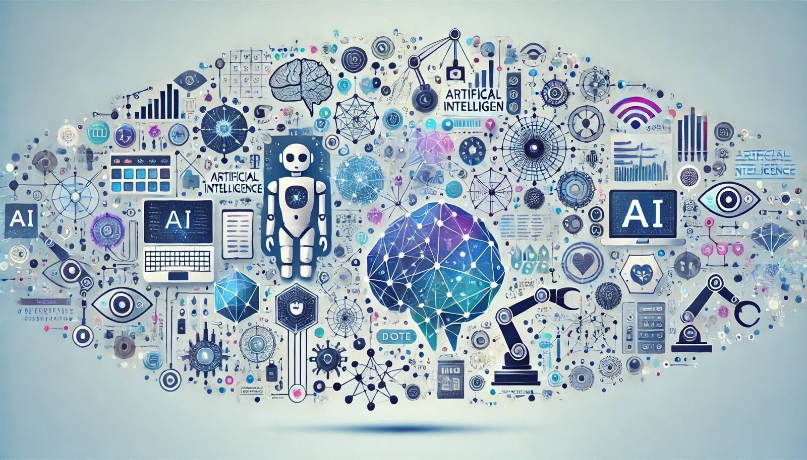

Unpacking the Truths and Myths about AI: What You Need to Know

Artificial Intelligence (AI) transforms our world in countless ways, from automating mundane tasks to tackling complex challenges. However, with this surge in AI applications come many things that need to be clarified about its capabilities and limitations. This blog will explore several truths and myths about AI, highlighting what it can do today, what it cannot, and why it matters.

- AI Can Help Automate Routine Tasks - Truth (Confidence: Low)
AI is widely used to automate routine and repetitive tasks across various industries. Examples include scheduling, data entry, and even complex inventory management and manufacturing processes. This automation allows human workers to focus on more strategic activities. Despite being true, confidence is marked as low because success in automation can vary depending on the complexity of the processes and the quality of AI tools in use.
- Natural Language Processing Allows AI to Understand Human Language - Truth (Confidence: Medium)
Natural Language Processing (NLP) is a specialized field within AI focusing on human-computer interaction through language. NLP enables machines to understand and process human language, paving the way for applications such as language translation, sentiment analysis, and customer service chatbots. Though it holds immense potential, limitations still exist in fully grasping the nuances and context of language, which explains the medium confidence level.
- AI Is Used in Facial Recognition Technology - Truth (Confidence: Medium; Common Misunderstanding: Yes)
AI powers facial recognition technologies, helping systems identify individuals by analyzing their facial features. It is commonly used for security and unlocking personal devices. However, there are widespread misunderstandings about its infallibility and privacy implications. Concerns about misuse and ethical issues need careful consideration, leading to ongoing debates and a medium confidence level.
- Autonomous Vehicles Use AI to Navigate - Truth (Confidence: High; Common Misunderstanding: Yes)
Autonomous vehicles rely heavily on AI to interpret sensory information, identify obstacles, recognize road signs, and make navigation decisions. AI enables these vehicles to adapt to changing traffic conditions and ensure safe passage. There is a common misconception that autonomous driving is completely error-free. While AI makes the technology possible, achieving complete reliability still requires overcoming numerous challenges, making this an evolving field.
- AI Can Create Personalized User Experiences on Platforms - Truth (Confidence: Medium)
AI has become the backbone of personalization on digital platforms. AI curates personalized content, recommendations, and ads by analyzing users' preferences, behavior, and interactions. This enhances user engagement and satisfaction, but accuracy depends on data quality and privacy measures, which is why this point has medium confidence.
- AI Systems Can Be Biased if the Data They Are Trained On Is Biased - Truth (Confidence: High; Common Misunderstanding: Yes)
AI systems reflect the data used for training. If the training data contains biases, the resulting AI models will inevitably perpetuate these biases in their predictions and decisions. This truth is critical for understanding how AI can unintentionally propagate discrimination, especially in hiring, lending, or law enforcement. Addressing bias is essential in creating fair and equitable AI systems.
- AI Has Applications in Finance, Such as Fraud Detection - Truth (Confidence: Medium)
AI is increasingly used in finance to detect fraudulent activities by analyzing patterns and anomalies across vast transactions. By processing large volumes of data in real time, AI can identify red flags more effectively than manual review processes. While confidence is medium, the impact is significant as AI helps safeguard financial systems from fraud.
- Robotics Powered by AI Can Perform Complex Surgeries - Truth (Confidence: High)
AI-driven robotics enhance the precision and control in surgical procedures, enabling minimally invasive surgeries and reducing human error. These robotic systems assist surgeons with complex operations, often leading to shorter recovery times and improved patient outcomes.
- AI Can Generate Art, Music, and Literature - Truth (Confidence: Medium; Common Misunderstanding: Yes)
AI can generate art, compose music, and write literature by learning from vast sets of pre-existing data. This creativity, while impressive, is often misunderstood as equivalent to human creativity. AI-created works can mimic different styles and evoke human-like qualities, but they lack the intent, emotional experience, and originality that characterize human art.
- AI Enhances Cybersecurity Measures - Truth (Confidence: High)
In the realm of cybersecurity, AI is crucial for detecting vulnerabilities, identifying threats, and mounting defenses against cyber-attacks. By analyzing patterns in network traffic, AI can detect malicious behavior that could otherwise go unnoticed, enhancing organizations' overall security posture.
- AI Is Used in Predictive Maintenance for Industrial Equipment - Truth (Confidence: High)
AI is utilized in predictive maintenance to enhance the efficiency and reliability of industrial equipment. By leveraging machine learning algorithms, AI can predict equipment failures before they occur, allowing for proactive maintenance, which reduces downtime and operational costs.
- AI Can Assist in Climate Modeling and Predicting Weather Patterns - Truth (Confidence: High)
AI significantly contributes to climate modeling and predicting weather patterns. It utilizes vast amounts of data and machine learning techniques to improve the accuracy of weather forecasts and climate predictions, helping in better planning and decision-making across various sectors.
- AI Can Help in Disaster Response and Management - Truth (Confidence: High)
In disaster response and management, AI aids by analyzing real-time data to predict disaster impacts, optimizing rescue or relief operations, and enhancing the overall efficiency of response strategies. This technology is crucial for planning and executing effective disaster management operations.
- AI-Powered Chatbots Can Handle Customer Service Inquiries - Truth (Confidence: Medium)
AI-driven chatbots are increasingly used in customer service to handle inquiries efficiently. These chatbots can manage multiple customer interactions simultaneously, providing timely responses and learning from interactions to improve future communications.
- AI Can Optimize Supply Chains and Logistics - Truth (Confidence: Medium)
AI enhances supply chain and logistics by forecasting demand, optimizing delivery routes, and managing inventory more effectively. It uses predictive analytics to mitigate risks and improve operational efficiencies, which is crucial in maintaining competitive advantage in fast-paced markets.
- AI Can Help in Legal Document Analysis - Truth (Confidence: High)
In the legal field, AI aids in document analysis by quickly reviewing and extracting pertinent information from large volumes of legal documents. This reduces the manual effort required and increases the accuracy and speed of legal processes.
- AI Impacts Employment, with the Potential to Both Create and Displace Jobs - Truth (Confidence: High; Common Misunderstanding: Yes)
AI impacts employment significantly, with the potential to both create and displace jobs. The introduction of AI and automation has traditionally led to job displacement, especially in roles characterized by repetitive and predictable tasks. However, it also creates new job opportunities in emerging fields such as AI development, cybersecurity, and data analysis. Studies suggest that while some jobs are displaced, new ones are created, often requiring different skill sets. The challenge lies in transitioning workers into these new roles, which may need retraining and upskilling.
- AI Can Identify Patterns in Data That Humans Might Miss - Truth (Confidence: Medium)
AI's capability to identify patterns humans might miss is crucial across many sectors, including healthcare, finance, and security. By analyzing large datasets, AI can detect anomalies and trends that escape human detection, which is particularly valuable in fields like fraud detection and predictive maintenance.
- AI Is Being Used to Develop More Accurate Forecasting Tools in Business - Truth (Confidence: Medium)
AI enhances business forecasting by analyzing historical data to predict future trends. This application is evident in industries like retail, where AI helps forecast sales trends and manage inventory more effectively.
- AI Systems Require Large Amounts of Data to Learn Effectively - Truth (Confidence: Medium)
AI systems rely heavily on large datasets to learn effectively. The performance of AI models is directly tied to the quantity and quality of data they process, which can include everything from consumer behavior data to real-time operational data from machinery.
- AI Can Aid in Educational Personalized Learning Paths for Students - Truth (Confidence: Medium)
AI can tailor learning experiences to individual students' needs by analyzing their previous performance and adapting the content accordingly. This approach not only helps in addressing diverse learning styles and paces but also enhances engagement and outcomes.
- AI Has Applications in Agriculture, Such as Monitoring Crop Health - Truth (Confidence: Medium)
AI is used in agriculture to monitor crop health and optimize farming practices. By analyzing data from various sources like satellite images and on-site sensors, AI can help predict crop yields, detect plant diseases early, and suggest optimal planting strategies.
- AI Ethics Is Concerned with the Moral Implications of AI Technology - Truth (Confidence: High; Common Misunderstanding: Yes)
The ethical implications of AI technology are a significant area of concern. AI ethics addresses issues such as bias, privacy, and the moral consequences of automated decision-making. Ensuring that AI systems are fair and do not perpetuate existing social inequalities is a critical challenge.
- AI Can Perpetuate Social Inequalities if Not Carefully Managed - Truth (Confidence: High; Common Misunderstanding: Yes)
If not managed carefully, AI can exacerbate social inequalities. Issues arise from biases embedded in training data, leading to discriminatory practices. This concern is particularly pertinent in hiring, lending, and law enforcement, where AI-driven decisions can significantly impact people's lives.
- Regulations Regarding AI Are Currently Being Developed in Many Countries - Truth (Confidence: High)
Many countries are actively developing regulations to manage the deployment and impacts of AI technologies. These regulations address privacy, security, and ethical issues, ensuring that AI technologies are used responsibly and safely.
- AI Can Assist Researchers by Sifting Through Large Datasets - Truth (Confidence: Medium)
AI significantly aids researchers by automating the sifting through large datasets, enabling them to identify complex patterns and generate hypotheses more efficiently. This helps in academic research, where AI tools can accelerate literature reviews and data analysis, enhancing research quality and efficiency.
- AI Is Used in the Recommendation Algorithms of Streaming Services - Truth (Confidence: Medium)
In the entertainment industry, AI is crucial in recommendation algorithms, helping streaming services personalize user content based on their viewing history and preferences. This tailoring enhances user engagement by suggesting relevant content that keeps viewers interested and subscribed.
- AI Can Make Autonomous Financial Trading Decisions - Truth (Confidence: High; Common Misunderstanding: Yes)
AI's capability to make autonomous trading decisions is transforming the finance sector. It analyzes vast amounts of market data to execute trades at optimal times, potentially increasing profitability while mitigating risks associated with human error.
- AI Systems Can Detect Anomalies in Network Behavior to Prevent Hacks - Truth (Confidence: High)
In cybersecurity, AI systems detect anomalies in network behavior, which helps prevent hacks. By identifying unusual patterns that deviate from the norm, AI can prompt timely interventions before security breaches occur.
- AI Can Automate and Optimize Traffic Systems - Truth (Confidence: Medium)
AI applications in traffic management help automate and optimize traffic systems, reducing congestion and improving road safety. These systems analyze real-time traffic data to adjust signals and manage traffic flow efficiently.
- AI-Powered Drones Can Be Used to Deliver Goods - Truth (Confidence: Medium)
AI-powered drones are increasingly used for delivering goods, offering a faster, more cost-effective alternative to traditional delivery methods. These drones navigate autonomously, avoiding obstacles and optimizing delivery routes.
- AI Can Assist in Language Learning Applications - Truth (Confidence: Medium)
AI also supports language learning applications by providing personalized learning experiences. It can adapt to the learner's pace and style, offering tailored exercises and corrective feedback to enhance learning.
- AI Can Simulate Human Behaviors in Computational Models - Truth (Confidence: High; Common Misunderstanding: Yes)
AI's ability to simulate human behaviors in computational models is profound, enabling more effective simulations in psychology and behavioral economics. This capability is critical in areas such as healthcare, where AI has expedited vaccine development by rapidly analyzing vast datasets of virus genetics and patient responses to identify potential vaccine candidates more quickly than traditional methods could.
- AI Can Improve Accessibility for Disabled Individuals Through Assistive Technologies - Truth (Confidence: High)
AI's role in improving accessibility for disabled individuals is another significant benefit. Through assistive technologies, such as voice-to-text transcription and predictive text systems, AI helps reduce barriers and enable better communication and interaction with technology.
- AI-Powered Systems Can Monitor Environmental Data for Conservation Efforts - Truth (Confidence: Medium)
Environmental conservation has also benefited from AI by monitoring and analyzing vast amounts of ecological data, helping in conservation efforts, and managing natural resources.
- Bias in AI Can Be Addressed Through Diverse Training Datasets and Testing - Truth (Confidence: High; Common Misunderstanding: Yes)
Addressing bias in AI involves employing diverse training datasets and rigorous testing to ensure AI systems perform fairly and without prejudice. This practice is crucial to preventing the perpetuation of existing biases and ensuring AI systems serve all user groups equitably.
- AI Is Used in Autonomous Weapon Systems, Raising Ethical Concerns - Truth (Confidence: High; Common Misunderstanding: Yes)
AI raises ethical concerns in autonomous weapon systems due to its potential use in making life-or-death decisions without human intervention. The debate centers around the moral implications of using such technology in warfare and the risks associated with autonomous decision-making.
- AI Systems Can Help Manage and Distribute Resources in Smart Cities - Truth (Confidence: Medium)
AI's integration into smart cities illustrates its capacity to enhance resource management and distribution, improving efficiency in utility management, traffic flow, and public services.
- AI Can Help Detect Diseases in Plants and Animals at an Early Stage - Truth (Confidence: Medium)
In agriculture, AI aids in early disease detection in plants and animals, significantly impacting food security and agricultural productivity by allowing timely interventions.
- AI Algorithms Are Essential in the Operation of Modern Search Engines - Truth (Confidence: Medium)
Search engines rely heavily on AI algorithms to parse and rank vast amounts of online information, enhancing the relevance and speed of search results for users.
- AI Can Influence Public Opinion Through Algorithmic Curation of Content on Social Media - Truth (Confidence: High; Common Misunderstanding: Yes)
AI influences public opinion through the algorithmic curation of content on social media platforms. By personalizing the content a user sees, AI can shape public discourse and influence societal trends, raising questions about the impact on democracy and individual choice.
- AI Has Consciousness and Emotions Like Humans - Myth (Confidence: High; Common Misunderstanding: Yes)
AI does not possess consciousness or emotions. It operates based on algorithms and data without any self-awareness or emotional states. AI's "responses" are pre-programmed and based on the patterns it has learned from its training data.
- AI Can Fully Replace Human Creativity - Myth (Confidence: High; Common Misunderstanding: Yes)
While AI can assist in creative processes like composing music or generating art, it does not possess creativity in the human sense. It replicates, or remixes patterns found in its training data, but true innovation and the emotional depth of creativity remain distinctly human traits.
- All AI Can Learn and Adapt Independently Without Human Intervention - Myth (Confidence: High; Common Misunderstanding: Yes)
Most AI systems require substantial setup, training, and ongoing maintenance by humans. While some advanced systems can "learn" from new data, they do not possess the autonomy or judgment needed to adapt independently without human oversight.
- AI Can Make Moral and Ethical Decisions Just Like Humans - Myth (Confidence: High; Common Misunderstanding: Yes)
AI systems follow programmed guidelines and cannot make moral decisions like humans. The ethical implications of AI decisions are based on the biases and perspectives of those who program and train these systems, not on the AI itself.
- AI Inherently Eliminates Bias from Decision-Making Processes - Myth (Confidence: High; Common Misunderstanding: Yes)
AI systems can perpetuate or even amplify existing biases if they are present in the training data or the design of the algorithms. Ensuring AI fairness and neutrality requires careful curation of data and ongoing scrutiny of AI behavior.
- AI Systems Always Make Fair and Unbiased Hiring Decisions - Myth (Confidence: High; Common Misunderstanding: Yes)
Similar to the above, AI hiring tools can reflect or amplify biases present in the data on which they were trained. Instances of AI perpetuating gender or racial biases in hiring have been documented, making it clear that AI does not inherently guarantee fairness.
- AI Can Completely Replace Teachers in Classrooms - Myth (Confidence: High; Common Misunderstanding: Yes)
While AI can provide educational support and personalized learning experiences, it cannot replace the nuanced and deeply human aspects of teaching, such as mentorship, emotional support, and ethical guidance.
- AI Understands Context and Sarcasm Perfectly When Processing Language - Myth (Confidence: High; Common Misunderstanding: Yes)
AI struggles with context and the subtleties of human language, including sarcasm, which often requires cultural context and an understanding of human emotions and social cues.
- AI Will Inevitably Lead to a Future Where No Humans Need to Work - Myth (Confidence: High; Common Misunderstanding: Yes)
While AI will change the nature of work and can automate many tasks, it is likely to reduce the need for human work. Jobs may evolve, and new types of employment will likely emerge as societies adapt to AI technologies.
- AI Cannot Make Mistakes or Errors in Processing - Myth (Confidence: High; Common Misunderstanding: Yes)
AI can and does make mistakes, primarily because it operates based on the data it was trained on, which can be incomplete or biased. AI's accuracy is highly dependent on the quality and breadth of that data, and errors in data or algorithmic flaws can lead to incorrect outputs.
- AI Has Its Own Beliefs and Desires - Myth (Confidence: High; Common Misunderstanding: Yes)
AI does not have consciousness, beliefs, desires, or personal motivations. It processes data and makes decisions based on its programming and the algorithms it uses, which humans create.
- AI Can Predict the Future with 100% Accuracy - Myth (Confidence: High; Common Misunderstanding: Yes)
AI predictions are based on statistical models and past data. While AI can forecast trends and outcomes with a certain level of reliability, it cannot do so with 100% accuracy due to the inherent unpredictability of future events and external variables not accounted for in its data.
- AI Understands Human Emotions in the Same Way People Do - Myth (Confidence: High; Common Misunderstanding: Yes)
AI can recognize patterns in data that may correspond to emotional expressions, and it can be trained to respond to human emotions in a way that simulates empathy or understanding. However, it does not "understand" emotions in the human sense of experiencing feelings.
- AI Can Independently Write Legally Binding Contracts Without Human Oversight - Myth (Confidence: High; Common Misunderstanding: Yes)
While AI can assist in drafting contracts based on templates and guidelines, human oversight is necessary to ensure that such documents meet legal standards and appropriately reflect the nuanced needs of the parties involved.
- AI Doesn't Require Any Energy or Resources to Function - Myth (Confidence: High; Common Misunderstanding: Yes)
AI systems require substantial computational power and energy to operate. The servers that run AI algorithms consume electricity, and the environmental impact of training large AI models can be significant.
- AI Can Fully Control a Human's Decision-Making Process - Myth (Confidence: High; Common Misunderstanding: Yes)
AI can influence decisions by providing information and recommendations or by automating certain tasks, but it does not control human decision-making. People are ultimately responsible for their choices and can accept or reject AI's suggestions.
- AI Can Be Biased Towards Individuals on Its Own - Myth (Confidence: High; Common Misunderstanding: Yes)
AI itself does not create biases. However, if the data used to train an AI system contains biases, the AI can perpetuate or even amplify these biases in its outputs. The biases reflect the input data and are not an inherent trait of the AI.
- AI Can Solve All of Humanity's Problems Without Any Trade-Offs - Myth (Confidence: High; Common Misunderstanding: Yes)
While AI has the potential to address many complex issues, from healthcare to environmental management, its applications come with trade-offs, including ethical concerns, job displacement, and the need for significant energy resources. AI is a tool, and like any tool, its effectiveness and ethical use depend on how it is applied.
- AI Can Form Genuine Friendships with Humans - Myth (Confidence: High; Common Misunderstanding: Yes)
AI can simulate conversation and mimic social interaction based on programmed responses but lacks the emotional capacity and subjective experiences that form the basis of genuine friendships.
- AI Can Function Without Any Form of Programming or Data Input - Myth (Confidence: High; Common Misunderstanding: Yes)
AI systems require programming and data to function. They operate based on algorithms designed by humans and data that train these algorithms to perform specific tasks. Without these, an AI system cannot operate.
- AI Has Its Sense of Identity and Self-Awareness - Myth (Confidence: High; Common Misunderstanding: Yes)
AI does not have self-awareness or a sense of identity. It operates within its designed capabilities and does not possess consciousness or self-perception.
- AI Does Not Require Maintenance or Updates to Function Optimally - Myth (Confidence: High; Common Misunderstanding: Yes)
AI systems require regular updates and maintenance to function optimally like any software. These updates may fix issues, improve functionality, or adapt to new data inputs.
- AI Can Autonomously Decide to Stop Working If It Chooses - Myth (Confidence: High; Common Misunderstanding: Yes)
AI does not have desires or the ability to make autonomous decisions. It will stop working if it encounters a fault, if programmed to cease operation under certain conditions, or if directed to do so by a user but not of its own volition.
- AI Can Develop Its Languages That Humans Cannot Understand - Myth (Confidence: High; Common Misunderstanding: Yes)
While there have been instances where AI systems have created forms of communication that were not initially understandable to humans, these are not languages in the true sense. They are more about finding efficiencies in data processing. Researchers avoid AI from creating these "languages" to ensure the systems remain interpretable and controllable.
- AI Was Created Without Any Influence from Previous Technological Advancements - Myth (Confidence: High; Common Misunderstanding: Yes)
AI development is heavily based on previous technological advancements and builds upon decades of research in computer science, mathematics, psychology, and neuroscience. AI is a culmination of extensive scientific progress and historical developments.
Why These Truths and Myths Matter
Understanding these truths and myths about AI helps bridge the gap between popular perceptions and actual capabilities. AI is a tool that has the potential to change industries, but only when used responsibly, with a complete understanding of both its strengths and limitations. As we integrate AI into everyday life, keeping an informed perspective can help leverage its benefits while mitigating risks, such as ethical issues and biases.
Final Thoughts
AI's impact on the world is undeniable, as are the misunderstandings surrounding its true abilities. We can navigate this transformative technology more effectively by shedding light on these myths and clarifying what AI can and cannot do. Ultimately, awareness and thoughtful use will define AI's role in our future.